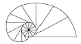
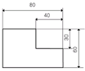
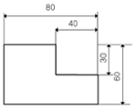
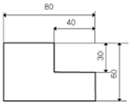
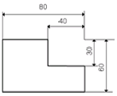
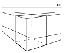
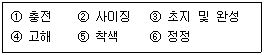

컴퓨터그래픽스운용기능사 (2010-03-28 기출문제)
1과목: 산업디자인 일반
1. 다음 중 이념적 형태(Ideal Form)에 속하는 것은?
- 현실적 형태
- 자연 형태
- 추상 형태
- 인위적 형태
(정답률: 63%)

2. 독일공작연맹에 관한 설명 중 틀린 것은?
- 헤르만 무테지우스가 창출한 새로운 미술운동이다.
- 기계화 시대에 교육과 산업을 결합시키려는 최초의 시도 였다.
- 예술, 공예, 공업의 협력으로 독일공업제품의 품질을 향상시키려는 것이 기본이념이다.
- 나치스 정권으로 20세기 모던 디자인과 바우하우스에 영향을 미치지 못했다.
(정답률: 75%)
3. 다음 중 마케팅 믹스에 속하지 않은 것은?
- 제품
- 가격
- 촉진
- 매장
(정답률: 77%)
4. 제품디자인의 영역에 속하는 것은?
- 포장디자인
- 전시디자인
- 용기디자인
- 광고디자인
(정답률: 67%)
5. 다음 중 이웃하는 두 항의 차이가 일정한 수열에 의한 비례로, 동양 건축의 법칙처럼 사용되고 있으며 율동감을 느낄 수 있는 비례는?
- 등비수열에 의한 비례
- 등차수열에 의한 비례
- 정수비에 의한 비례
- 상가수열에 의한 비례
(정답률: 63%)
6. 다음 디자인 원리 중 시각적으로 경쾌한 율동감(rhythm)을 주는 것은?
- 통일
- 점이
- 균일
- 대비
(정답률: 77%)
7. 다음 중 묘사에 관한 설명과 거리가 가장 먼 것은?
- 반복함으로 조형의 질서와 법칙을 파악할 수 있다.
- 초보 단계에서는 기초적인 도구를 이용한 사실적 표현이 바람직하다.
- 복잡한 조형요소들을 일관된 체계나 구조 속에서 간략화하여 변형한다.
- 감각을 깊게 하고 조형력을 기르기 위한 수단으로 묘사가 필요하다.
(정답률: 57%)
8. 실내 디자인에서 크기와 모양에 일관성을 부여하고 질서감과 안정감을 주는 원리는?
- 다양성
- 반복성
- 고급성
- 통일성
(정답률: 85%)
9. 영상 디자인 매체의 종류와 거리가 먼 것은?
- 브로슈어
- VTR
- 인터넷
- 텔레비전
(정답률: 81%)
10. 대중이 이용하는 공항, 역사, 터미널, 미술관, 박물관 등을 대상으로 하는 디자인 분야는?
- 공공 인테리어
- 상업 인테리어
- 사무실 인테리어
- 디스플레이 디자인
(정답률: 86%)
11. 사선의 성격을 나타낸 설명 중 올바른 것은?
- 고결, 희망, 상승감, 긴장감을 높여 준다.
- 평화, 정지, 안정감을 더해 준다.
- 동적, 불안정한 느낌을 주지만 때론 강한 표현을 나타낸다.
- 자유분방함과 풍부한 감정을 나타낸다.
(정답률: 85%)
12. 다음 중 렌더링에 관한 설명이 틀린 것은?
- 완성될 제품에 대한 예상도이다.
- 실물이 가진 형태, 색체, 재질감을 충실히 표현한다.
- 제시용 렌더링이란 부품의 구조와 기능을 설명할 목적으로 쓰인다.
- 최종 디자인은 결정하려는 표현 전달의 단계이다.
(정답률: 60%)
13. 다음 중 포장디자인의 개발시기와 가장 관련이 없는 요건은?
- 이윤의 하락
- 유통의 변경
- 시장의 진입
- 생산의 증가
(정답률: 47%)
14. 편집디자인의 요소로 가장 거리가 먼 것은?
- 타이포그래피
- 레이아웃
- 포토그래피
- 스토리보드
(정답률: 69%)
15. 다음 중 소비자 행동에 미치는 영향을 바르게 나열한 것은?
- 국제적 요인, 경제적 요인, 기능적 요인, 충동적 요인
- 계절적 요인, 경제적 요인, 유행적 요인, 시간적 요인
- 문화적 요인, 사회적 요인, 개인적 요인, 심리적 요인
- 시간적 요인, 충동적 요인, 상대적 요인, 환경적 요인
(정답률: 73%)
16. 다음 중 실내디자인의 목적과 거리가 가장 먼 것은?
- 문화적, 경제적 측면을 고려한 합리적인 실내 공간 계획
- 기능적이고 쾌적한 환경을 창조하기 위한 실내 공간 계획
- 독창적이고 합리적인 공간으로 창조하기 위한 실내 공간 계획
- 기능적 설계요소보다 미적인 요소를 중시하는 실내 공간 계획
(정답률: 85%)
17. 디자이너가 즉흥적으로 떠오르는 여러 가지 생각을 메모하기 위한 최초의 스케치는?
- 스크래치 스케치
- 러프 스케치
- 스타일 스케치
- 컨셉
(정답률: 79%)
18. 옥외광고 중 상점 입구 또는 처마 끝 등에 설치하는 간판은?
- 가로형 간판
- 점두간판
- 입간판
- 야립간판
(정답률: 58%)
19. 조형 대학으로서 그 성격이 디자이너의 양성을 주로 한 바우하우스 시기는?
- 제1기 바우하우스
- 제2기 바우하우스
- 제3기 바우하우스
- 뉴 바우하우스
(정답률: 62%)
20. 디자인의 본질적 의미를 옳게 설명한 것은?
- 아름다움만을 추구하는 조형 활동이다.
- 기능적인 면만을 고려하는 행위이다.
- 실용적이고 미적인 조형의 가시적인 표현이다.
- 기존의 디자인을 수정 개선하여 모방하는 활동이다.
(정답률: 84%)
2과목: 색채 및 도법
21. 색상이 정반대의 관계인 두 색을 옆에 놓으면, 서로의 영향으로 인하여 각각의 채도가 더 높게 보이는 대비현상은?
- 보색 대비
- 명도 대비
- 한난 대비
- 계시 대비
(정답률: 77%)
22. 다음 그림과 같이 원기둥에 감긴 실의 한 끝을 늦추지 않고 풀어 나갈 때, 이 실의 끝이 그리는 곡선은?

- 등간격 곡선
- 인벌류트 곡선
- 사이클로이드 곡선
- 아르키메데스 곡선
(정답률: 52%)
23. 일반적으로 제도에서 사용하는 3가지 선의 종류에 포함되지 않는 것은?
- 실선
- 곡선
- 파선
- 쇄선
(정답률: 68%)
24. 중간혼합에 대한 설명으로 틀린 것은?
- 혼합된 색의 색상은 두 색의 중간이 된다.
- 혼합된 색의 채도는 혼합 전 채도가 강한 쪽보다는 약해진다.
- 보색관계의 혼합은 중간명도의 회색이 된다.
- 혼합된 색의 명도는 혼합 전 색의 명도보다 높아진다.
(정답률: 59%)
25. 다음 중 한쪽 단면도에 대한 설명으로 틀린 것은?
- 대칭형인 물체의 외형과 내부의 구조 및 형태를 동시에 표시하는 단면이다.
- 대칭 중심선의 1/4을 단면으로 표시하고, 단면하지 않은 쪽의 숨은선은 생략하는 것이 일반적이다.
- 물체의 기본이 되는 중심선에 따라 전체를 절단한 면으로 표시하는 것을 원칙으로 한다.
- 겉모양과 단면을 동시에 표시할 수 있어 널리 사용 한다.
(정답률: 43%)
26. 투명하거나 반투명한 물체에서 볼 수 있는 색은?
- 표면색
- 공간색
- 면색
- 간섭색
(정답률: 66%)
27. 명시성에 대한 설명 중 가장 올바른 것은?
- 사물이 맑게 보인다.
- 사물이 밝게 보인다.
- 같이 배열했을 때 특별한 효과가 나타난다.
- 멀리서도 눈에 잘 보인다.
(정답률: 77%)
28. 다음 중 정신질환자의 치료에 도움이 되는 병실 색채로 적합한 것은?
- 고채도의 빨강
- 고채도의 연두
- 고채도의 주황
- 중간채도의 파랑
(정답률: 68%)
29. 색의 삼속성에 따라 오메가 공간이라는 색입체를 만들고, 색채 조화의 정도를 정량적으로 설명한 색채 조화론은?
- 비렌의 색채조화론
- 쉐뷰럴의 색체조화론
- 문 · 스펜서의 색채조화론
- 오스트발트의 색채조화론
(정답률: 65%)
30. 다음 중 치수가 가장 바르게 기입된 것은?




(정답률: 79%)
31. 다음 색 중 우아한 배색으로 가장 적합한 색은?
- 빨강
- 노랑
- 보라
- 파랑
(정답률: 82%)
32. 먼셀의 색입체에 대한 설명 중 틀린 것은?
- 수평으로 자르면 동일 명도면이 나타난다.
- 수직으로 자르면 동일 채도면이 나타난다.
- 중심축으로 가면 저채도, 바깥 둘레로 나오면 고채도가 된다.
- 색의 3속성에 따라 배열되어 있다.
(정답률: 42%)
33. 투시도법에서 물체를 보는 눈의 위치를 표시하는 것은?
- GP
- SL
- EP
- HL
(정답률: 69%)
34. 밝은 색과 어두운 색이 서로 영향을 주어서 어두운 색은 더욱 어둡게, 밝은 색은 더욱 밝게 보이는 현상은?
- 색상대비
- 채도대비
- 보색대비
- 명도대비
(정답률: 71%)
35. 다음 중 때로는 차갑게도, 때로는 따뜻하게도 느껴지는 색의 예가 아닌 것은?
- 청록
- 녹색
- 보라
- 자주
(정답률: 52%)
36. 다음 중 현색계에 대한 설명이 틀린 것은?
- 정확한 측정을 할 수 있다.
- 지각적으로 일정하게 배열되어 잇다.
- 먼셀 표색계가 대표적이다.
- 사용하기가 쉽다.
(정답률: 45%)
37. 그림과 같이 물체를 표현하는 투시법은?

- 사각투시
- 유각투시
- 평행투시
- 삼각투시
(정답률: 60%)
38. 척도의 종류 중 실제 크기보다 크게 그리는 것은?
- 현척
- 축척
- 실척
- 배척
(정답률: 81%)
39. 투상도의 제3각법에 대한 설명으로 잘못된 것은?
- 기준이 눈으로부터 눈, 화면, 물체의 순서로 되어있다.
- 미국에서 발달하여 빠른 속도로 보급 되었다.
- 한국산업표준의 제도 통칙에 이를 적용하였다.
- 유럽에서 발달하여 독일을 거쳐 우리나라에 보급되었다.
(정답률: 68%)
40. 평면도법에서 주어진 직선 양 끝 두 점을 각각 중심으로 하여 그 직선의 반보다 조금 긴 임의의 길이를 반지름으로 하는 원호를 그어 이들의 교점을 연결했다면 무엇을 구하기 위한 것인가?
- 직선의 2등분
- 원의 중심 구하기
- 각의 2등분
- 수평선 긋기
(정답률: 54%)
3과목: 디자인 재료
41. 탄소가 주요소가 되는 복합물을 의미하여 특히 탄소와 수소의 결합으로 만들어져 탄화수소(hydrocarbon)라고 부르기도 하는 재료는?
- 무기재료
- 유기재료
- 금속재료
- 유리재료
(정답률: 61%)
42. 백색계의 무기 안료가 아닌 것은?
- 아연화
- 황화아연
- 티탄백
- 송연
(정답률: 50%)
43. 화학적, 기계적 가공에 의하여 종이의 질을 변화시켜 사용 목적에 알맞게 만드는 가공 방법은?
- 도피 가공
- 흡수 가공
- 변성 가공
- 배접 가공
(정답률: 67%)
44. 필름의 감도를 나타내는 표시기호 중 국제표준화기구에 해당되는 것은?
- DIN
- ASA
- ISO
- KS
(정답률: 77%)
45. 다음의 종이 제조 공정을 올바른 순서로 나열한 것은?

- ① ② ③ ④ ⑤ ⑥
- ② ④ ③ ⑤ ① ⑥
- ⑥ ③ ⑤ ④ ② ①
- ④ ② ① ⑤ ⑥ ③
(정답률: 80%)
46. 종이의 단위 면적당 무게를 표시하는 것으로 종이의 품질을 표시하는 대표적인 단위는?
- 평량
- 인장강도
- 파열강도
- 인열강도
(정답률: 65%)
47. 목절(木節) 점토에 대한 설명 중 틀린 것은?
- 점토 원료 중에서 가장 가소성이 풍부하다.
- 모암 부근에 남아있는 잔류 점토로 백색이 많고 규산분이 많아 내화도가 높다.
- 백목절, 태목절, 청목절로 나누어진다.
- 유기물과 철분 등 불순물을 많이 함유하고 있다.
(정답률: 44%)
48. 플라스틱 제품 중 가장 오랜 역사를 가진 것으로 일반적으로 베이클라이트(bkelite)라고도 하며 열경화성 수지를 대표하는 것은?
- 멜라민 수지
- 요소 수지
- 페놀 수지
- 푸란 수지
(정답률: 69%)
4과목: 컴퓨터 그래픽스
49. 다음 중 앨리어스(alias)와 안티 앨리어스(anti-alias)에 관한 설명으로 틀린 것은?
- 안티 앨리어스 처리시 이미지의 크기는 변하지 않으면서 부드러운 이미지를 얻을 수 있다.
- 페인트 툴로 그린 선은 안티 앨리어스 된 선이다.
- 시간적 앨리어스는 이미지 데이터를 스캔할 때 데이터를 잃어버리는 현상이다.
- 12 point 이하의 문자는 안티 앨리어스 시키면 오히려 문자 이미지가 흐려 보인다.
(정답률: 52%)
50. 컴퓨터 그래픽스 프로그램 작업에 사용되는 눈금자의 단위가 아닌 것은?
- points
- inches
- pics
- bit
(정답률: 66%)
51. 다음 중 CMYK 모델을 모두 수용할 수 있는 색영역을 가지기 때문에 RGB 모델로의 변환시에 중간 단계로 사용되는 컬러 모드는?
- HSB Color
- Duotone Dolor
- Lab Color
- Index Color
(정답률: 58%)
52. 1024 메가바이트(MB)와 같은 크기는?
- 1킬로바이트(KB)
- 1기가바이트(GB)
- 1000기가바이트(GB)
- 1000000바이트(B)
(정답률: 79%)
53. 3차원 형상 모델링 중 속이 꽉 차 있어 수치 데이터 처리가 정확하여 제품생산을 위한 도면제작과 연계된 모델은?
- 와이어프레임 모델
- 서피스 모델
- 솔리드 모델
- 곡면 모델
(정답률: 72%)
54. 다음 중 웹 디자인에 관한 설명 중 틀린 것은?
- 디자인은 전송 속도를 우선 고려하여야 한다.
- 그림 이미지는 JPEG, GIF 등을 사용한다.
- 디자인은 웹 브라우저의 특성을 파악하고 이를 잘 활용해야 한다.
- 디자인할 화면의 크기는 최대한 크고, 보기 좋게 한다.
(정답률: 70%)
55. 다음 중 원점으로부터의 거리와 각도를 사용하여 좌표를 나타내는 좌표계는?
- 원동 좌표계(Cylindrical Coordinate system)
- 모델 좌표계(Model Coordinate system)
- 극 좌표계(Polar Coordinate system)
- 직교 좌표계(Cartesian Coordinate system)
(정답률: 62%)
56. 네 가지 노즐을 통해 잉크를 뿌려서 문자나 이미지를 나타내는 프린트 방식은?
- 레이저 프린터(Laser printer) 방식
- 잉크젯 프린터(Inkjet printer) 방식
- 도트 매트릭스(Dot printer) 방식
- 펜 플로터(Pen printer) 방식
(정답률: 85%)
57. 일러스트레이터(Illustrator) 프로그램에서 도형들의 겹친 부분 결합, 분리 등 여러 형태로 변하게 하는 기능의 명령어는?
- Scale
- Pathfinder
- Distort
- Placed Art
(정답률: 75%)
58. 감산혼합의 방식을 사용하므로 색을 혼합할수록 어두운 색을 얻을 수 있는 시스템은?
- RGB
- CMYK
- HSB
- LAB
(정답률: 75%)
59. 다음 중 스캐너에 대한 설명으로 틀린 것은?
- 스캐너는 반사된 빛을 측정하기 위해 CCD라는 실리콘 칩을 사용한다.
- 해상도의 단위는 LPI이다.
- 입력된 파일의 크기를 작게 하거나 원하는 영역만 스캔할 수도 있다.
- 색상과 콘트라스트를 더울 정확하게 조절하기 위해 감마보정이라는 방법을 사용한다.
(정답률: 58%)
60. 다음 중 픽셀로 구성되어 있는 사진 이미지의 편집, 수정에 가장 적합한 프로그램은?
- 일러스트레이터
- 3D 스튜디오 맥스
- 포토샵
- Quark 익스프레스
(정답률: 88%)